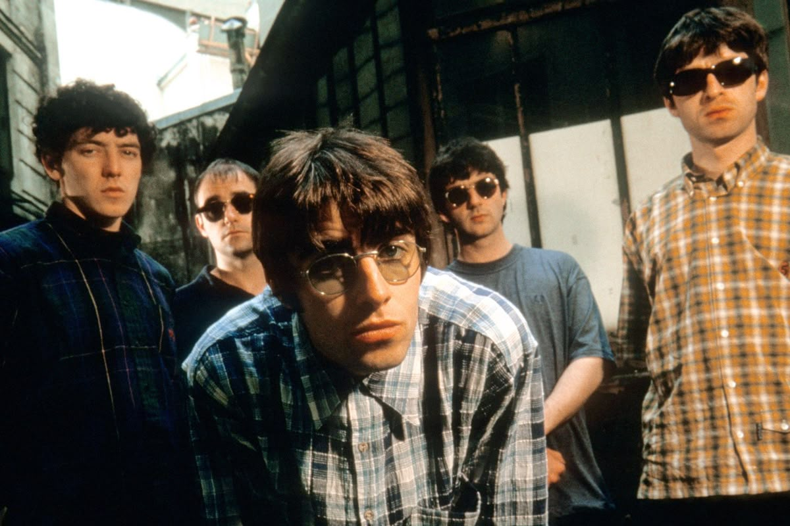
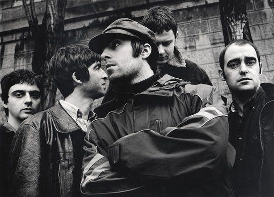
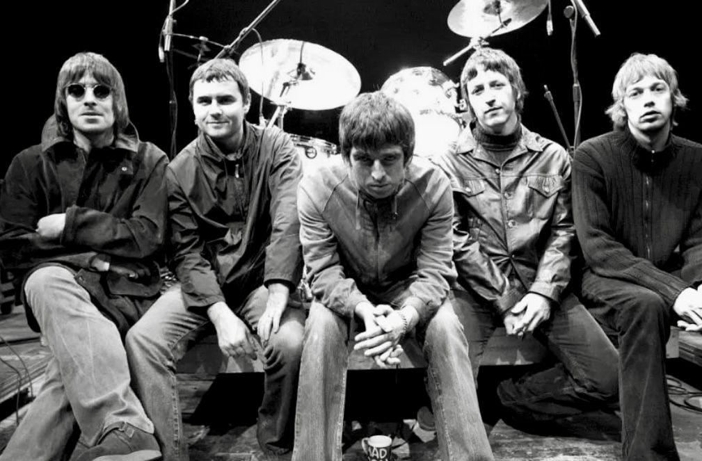
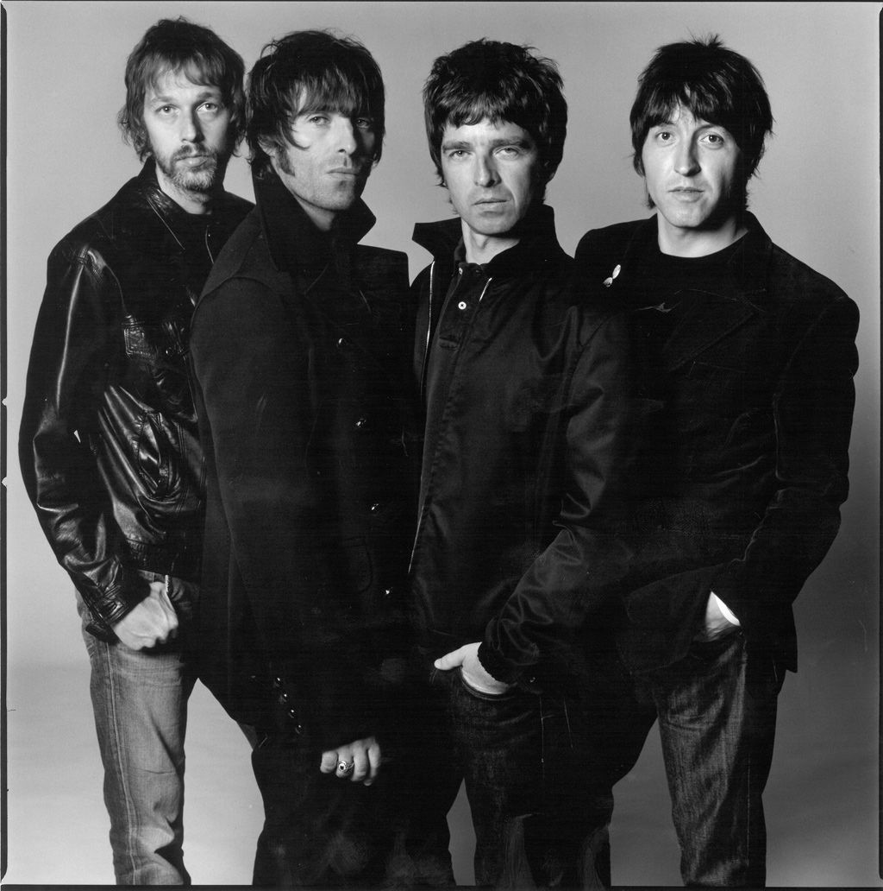
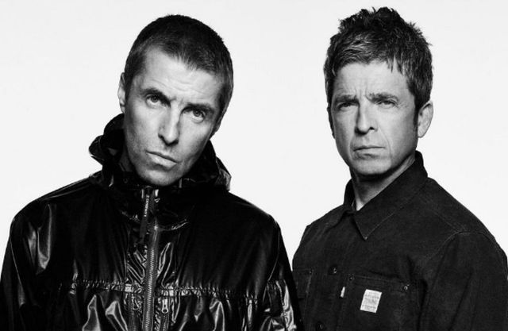

| THE STORY | MEMBER | ALBUM | GOODS | LIVE |
|---|

OASIS
Oasis was the defining rock band of the 1990s Britpop movement,
emerging from Manchester and achieving
massive global success with anthems like Wonderwall and
Don't Look Back in Anger. The group was fronted by the two
famously feuding Gallagher brothers: Liam
the iconic lead vocalist known for his swagger, and Noel, the lead guitarist and primary songwriter
whose
Beatles-inspired melodies defined the band's sound.
"HERE BEGINS A CHRONOLOGICAL STORY OF OASIS"
|  |
1991-1995 Oasis was formed in Manchester in 1991 when singer Liam Gallagher joined a local band, soon convincing his older brother, Noel Gallagher, to join as the guitarist and primary songwriter under the condition that he lead the group. After being discovered in 1993, the band signed a record deal and exploded onto the scene in 1994 with their debut album, Definitely Maybe, which became the fastest-selling debut in UK history. Their global breakthrough arrived in 1995 with their second album, (What's The Story) Morning Glory?, which featured huge hits like 'Wonderwall' and 'Don't Look Back in Anger,' cementing their status as the kings of Britpop, despite their highly publicized rivalry with the band Blur. |
|  |
1996-1998 The period, 1996 to 1998 saw Oasis hit their commercial peak, as they performed to 250,000 fans over two nights at Knebworth in 1996, followed by the release of their highly anticipated third album, Be Here Now, in 1997, which,though it became the fas test-selling album in UK history, was largely dismissed by critics and eventually the band itself as over-produced and a symbol of the end of the Britpop era. |
|  |
1999-2008 The period, 1999 to 2008 saw Oasis rebuild their lineup and musical direction after departure of founding members, including guitarist Paul 'Bonehead' Arthurs and bassist Paul 'Guigsy' McGuigan, who were replaced by Gem Archer and Andy Bell. The band's fourth album, Standing on the Shoulder of Giants, marked a noticeable shift toward psychedelic and experimental sounds, moving away from their roots. After successfully regaining momentum with Heathen Chemistry, Oasis achieved a cre ative revival with their 2005 album Don't Believe Truth, which was highly praised for its democratic songwriting—with every member contributing—and spawned hits like 'Lyla'. The group maintained its strength until releasing its seventh and final studio album, Dig Out Your Soul, which was generally well-received and preceded their final breakup the following year. |
|  |
2009-2025 The band abruptly split on August 28, 2009, when Noel Gallagher quit just before concert in Paris following severe backstage fight with his brother, Liam. Following the breakup, the members pursued separate paths: Liam formed the band Beady Eye before launching a highly successful solo career, while Noel established his own acclaimed project, Noel Gallagher's High Flying Birds.After 15 years of hiatus, the group dramatically announced their reunion in August 2024—ahead of the 30th anniversary of Definitely Maybe—and are scheduled to return to the stage for a major stadium tour, the 'Oasis Live '25 Tour,' in 2025. |